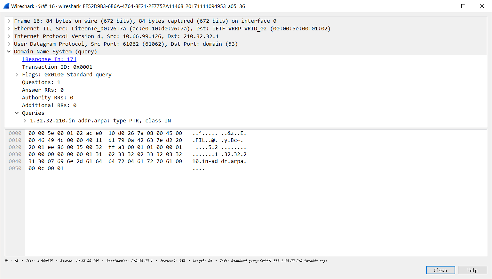
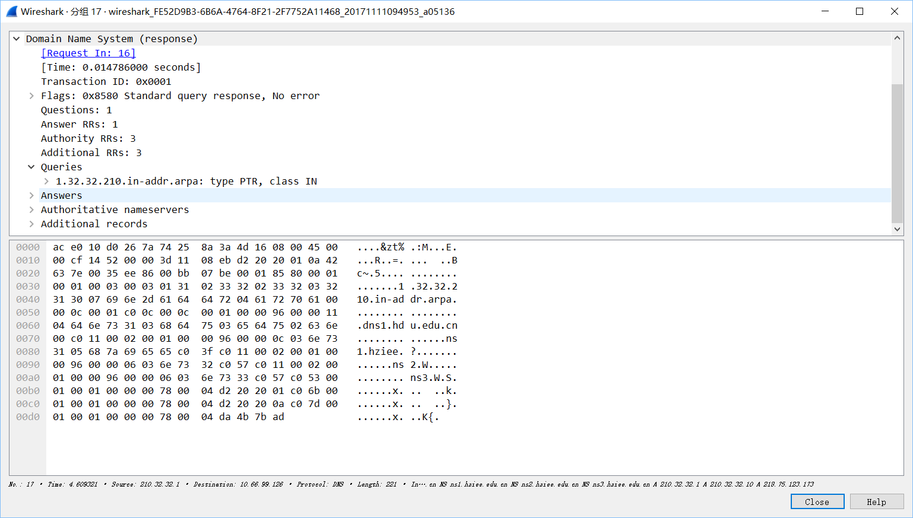
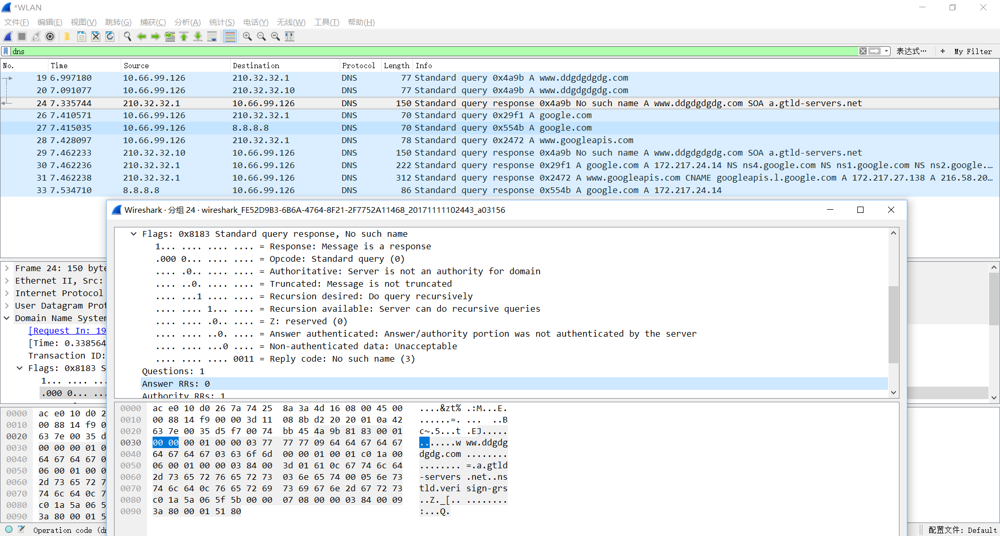

DNS
DNS 是域名系统（Domain Name System）的缩写，它是一种用于 TCP/IP 应用程序的分布式数据库，它提供主机名字和 I P 地址之间的转换及有关电子邮件的选路信息。所谓“分布式”是指在 Internet 上的单个站点不能拥有所有的信息。每个站点（如大学中的系、校园、公司或公司中的部门）保留它自己的信息数据库，并运行一个服务器程序供 Internet上的其他系统（客户程序）查询。
DNS 命名方式中，采用了分散和分层的机制来实现域名空间的委派授权，以及域名与地址相转换的授权。通过使用 DNS 的命名方式来为遍布全球的网络设备分配域名，而这则是由分散在世界各地的服务器实现的。
DNS 工作流程
域名服务分为客户端和服务器端，客户端提出请求，询问一个 Domain Name 的 IP 地址，服务器端必须回答客户端的请求。本地 DNS 首先查询自己的数据库，如果自己的数据库中没有对应的 IP 地址，则向本地 DNS 上所设的上一级 DNS 询问，得到结果之后，将收到的结果保存在高速缓冲区，并回答给客户端。标识字段由客户程序设置并由服务器返回结果。客户程序通过它来确定响应与查询是否匹配。16 bit 的标志字段被划分为若干子字段
DNS 协议
标志中每一位的含义如下：
- QR：是 1 bit 字段，0 表示查询报文，1 表示响应报文。
- Opcode：报文类型，是一个 4 bit 字段，通常值为 0（标准查询），其他值为 1（反向查询）和 2（服务器状态请求）。
- AA：是 1 bit 字段，表示“授权回答（authoritative answer）”，如果此位为 1，表示服务器对问题部分的回答是权威性的。
- TC：是 1 bit 字段，表示“可截断的（truncated）”。使用 UDP 时，它表示当应答的总长度超过 512 字节时，只返回前 512 个字节。
- RD：是 1 bit 字段，表示“期望递归（recursion desired）”。该比特能在一个查询中设置，并在响应中返回。这个标志告诉名字服务器必须处理这个查询，也称为一个递归查询。如果该位为 0，且被请求的名字服务器没有一个授权回答，它就返回一个能解答该查询的其他名字服务器列表，这称为迭代查询。
- RA：是 1 bit 字段，表示“可用递归”。如果名字服务器支持递归查询，则在响应中将该比特设置为 1。
- Zero：随后的 3 bit 字段必须为 0。
- Rcode：是一个 4 bit 的返回码字段。通常的值为 0（没有差错）和 3（名字差错）。名字差错只有从一个授权 DNS 服务器上返回，它表示在查询中制定的域名不存在。随后的 4 个 16 bit 字段说明最后 4 个变长字段中包含的条目数。对于查询报文，问题（question）数通常是 1，而其他 3 项则均为 0。类似地，对于应答报文，回答数至少是 1，剩下的两项可以是 0 或非 0。

DNS 抓包
这里DNS报文首部前16bit格式如下：

DNS服务器通过Transaction ID来分辨同台主机的不同请求。
我打开浏览器访问百度
我请求百度dns的字段如下：

这里的前16bit是0x0100
而dns的响应如下：

如果请求的域名不存在，则如下：
